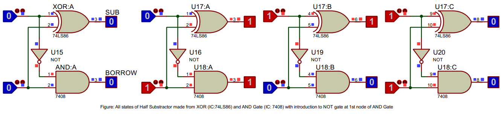
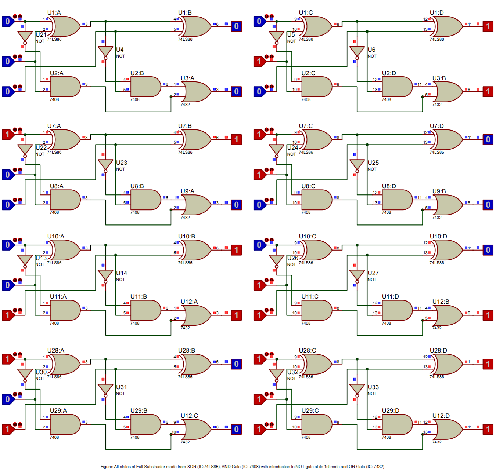

Subtractors and its types: Half Subtractors and Full Subtractors
Imagine a digital domain where computational efficiency is paramount. The inhabitants of this realm consistently rely on proficient methods to perform arithmetic operations, as their very survival depends on them. Subtractors, just like adders, are fundamental in ensuring that digital systems can execute tasks rapidly and effectively. A subtractor is an electronic device that carries out the arithmetic operation of subtraction on binary numbers. Subtractors are integral components in computers and other digital systems, as they form the basis for more complex arithmetic operations.
In this digital domain, two standout devices are recognized for their proficiency in managing computations: the Half Subtractor and the Full Subtractor.
- The Half Subtractor is designed to subtract two single-bit binary numbers, producing a difference and a borrow. This basic subtractor serves as a fundamental building block for digital circuits. Diving deeper into the subject, we encounter its Boolean expressions:
$Difference = A \oplus B$$Borrow = \overline{A} \cdot B$
These expressions represent the XOR operation and the AND operation on the complement of A and B, respectively. For more complex digital systems, multiple Half Subtractors can be joined to create Full Subtractors and even multi-bit subtractors, enabling the subtraction of multi-bit binary numbers.
- The Full Subtractor is a more sophisticated type of subtractor that considers not just two input bits (A and B) but also a borrow-in bit (Bin) from a previous subtraction. It outputs a difference and a borrow-out bit (Bout). The Boolean expressions for the Full Subtractor are as follows:
$Difference = A \oplus B \oplus Bin$$Borrow-out = (\overline{A} \cdot B) + (Bin \cdot (A \oplus B))$
These expressions involve a mix of XOR, AND, and OR operations. This level of complexity allows the Full Subtractor to handle borrow propagation, crucial for multi-bit subtraction in digital systems.
These subtractors, working collectively, facilitate efficient computations in numerous digital systems.
As digital systems continue to advance, more intricate systems that necessitate multi-bit binary subtraction are being developed. To meet this need, Full Subtractors can be linked in a sequence, forming a Borrow Ripple Subtractor. This setup enables the subtraction of larger binary numbers, broadening the computational abilities of digital systems. These multi-bit subtractors, like Borrow Ripple Subtractors and others, can execute subtraction on numbers with multiple bits, making them indispensable in digital systems such as microprocessors and digital signal processors.
Moreover, subtractors are crucial in numerous applications, including arithmetic logic units (ALUs), floating-point units (FPUs), and digital signal processing (DSP) hardware. Understanding Half Subtractors and Full Subtractors, their Boolean expressions, and applications can provide profound insights into the world of digital electronics and computer architecture.
Understanding the Intricacies of Subtractors
Both Half Subtractors and Full Subtractors are composed of simpler building blocks, known as logic gates. These gates, such as AND, OR, XOR, and NOT gates, cooperate in a specific sequence to execute binary subtraction and generate the appropriate difference and borrow outputs. A deeper understanding of these subtractors is vital for exploiting their potential and advancing the capabilities of digital systems.
Now that we have explored the world of subtractors, it's time to apply this knowledge practically. In the following section, we will investigate how to verify the truth tables of Half Subtractors and Full Subtractors using Proteus software. This robust platform is designed to simulate electronic circuits and bring them to life, providing an interactive experience that will deepen your understanding of Half Subtractors and Full Subtractors. This hands-on activity will elucidate their essential roles in digital systems, accommodating a broad spectrum of expertise levels, from novices to seasoned professionals.
Procedures of Doing the Experiment
Half Subtractor
Title
Verification of Half Subtractor Truth Table Using Proteus Software
Aim
To validate the truth table of a Half Subtractor using Proteus software simulation with 74LS86 XOR gate, 74LS08 AND gate, and 7404 NOT gate.
Requirements
Proteus software, 74LS86 XOR gate IC, 74LS08 AND gate IC, 7404 NOT gate IC, Logic State, and Logic Probe tools.
Theory
A Half Subtractor is a digital circuit that performs binary subtraction of two single-bit numbers, producing a difference and a borrow output. The Half Subtractor consists of an XOR gate (74LS86), an AND gate (74LS08), and a NOT gate (7404). The truth table of a Half Subtractor lists input-output combinations, providing a basis for verifying the circuit's functionality in a simulation.
Truth Table of Half Subtractor
| Input: A | Input: B | Difference | Borrow |
|---|---|---|---|
| 0 | 0 | 0 | 0 |
| 0 | 1 | 1 | 1 |
| 1 | 0 | 1 | 0 |
| 1 | 1 | 0 | 0 |
Procedure
- Open Proteus, create a new schematic capture.
- Add the 74LS86 XOR gate IC, 74LS08 AND gate IC, 7404 NOT gate IC, Logic State, and Logic Probe (Big) from the pick device menu to the dashboard.
- Place the XOR gate, AND gate, NOT gate, Logic State, and Logic Probe tools onto the schematic.
- Connect the components to form a Half Subtractor circuit: A and B inputs to XOR gate for Difference, A to NOT gate and then to AND gate along with B for Borrow.
- Run the simulation and observe the Difference and Borrow outputs for input combinations "00", "01", "10", "11".
- Verify the simulation results against the expected truth table of a Half Subtractor.
Result
The simulation results match the Half Subtractor truth table, validating its correct functionality.
Conclusion
The Half Subtractor truth table has been successfully verified using Proteus software, confirming its proper operation in digital circuits.
Full Subtractor
Title
Verification of Full Subtractor Truth Table Using Proteus Software
Aim
To validate the truth table of a Full Subtractor using Proteus software simulation with 74LS86, 7408, 7432, and 7404 gates.
Requirements
Proteus software, 74LS86 XOR gate IC, 7408 AND gate IC, 7432 OR gate IC, 7404 NOT gate IC, Logic State, and Logic Probe tools.
Theory
A Full Subtractor is a digital circuit that performs binary subtraction of three single-bit numbers, including a borrow from a previous subtraction. It produces a difference and a borrow output. The Full Subtractor consists of two XOR gates (74LS86), two AND gates (7408), an OR gate (7432), and a NOT gate (7404). The truth table of a Full Subtractor lists input-output combinations, providing a basis for verifying the circuit's functionality in a simulation.
Truth Table of Full Subtractor
| Input: A | Input: B | Borrow In (Bin) | Difference | Borrow Out (Bout) |
|---|---|---|---|---|
| 0 | 0 | 0 | 0 | 0 |
| 0 | 1 | 0 | 1 | 1 |
| 1 | 0 | 0 | 1 | 0 |
| 1 | 1 | 0 | 0 | 0 |
| 0 | 0 | 1 | 1 | 1 |
| 0 | 1 | 1 | 0 | 1 |
| 1 | 0 | 1 | 0 | 0 |
| 1 | 1 | 1 | 1 | 1 |
Procedure
- Open Proteus, create a new schematic capture.
- Add the 74LS86 XOR gate IC, 7408 AND gate IC, 7432 OR gate IC, 7404 NOT gate IC, Logic State, and Logic Probe (Big) from the pick device menu to the dashboard.
- Place the XOR gates, AND gates, OR gate, NOT gate, Logic State, and Logic Probe tools onto the schematic.
- Connect the components to form a Full Subtractor circuit: A and B inputs to the first XOR gate (74LS86), A input to the NOT gate (7404) and one AND gate (7408), B input to two AND gates (7408), XOR gate output to the second XOR gate (74LS86) and one AND gate (7408), Borrow In (Bin) input to the second XOR gate and the other AND gate (7408), both AND gate outputs to the OR gate (7432), second XOR gate output as Difference, and OR gate output as Borrow Out (Bout).
- Run the simulation and observe the Difference and Borrow Out outputs for all possible input combinations of A, B, and Borrow In (Bin).
- Verify the simulation results against the expected truth table of a Full Subtractor.
Result
The simulation results match the Full Subtractor truth table, validating its correct functionality.
Conclusion
The Full Subtractor truth table has been successfully verified using Proteus software, confirming its proper operation in digital circuits.
Want to know more? Carry on!
1. Half Subtractor
A half subtractor is a combinational circuit that performs the subtraction of two single-bit binary numbers. It has two input bits (A and B) and produces two output bits: a Difference bit (D) and a Borrow bit (Borrow).
1.1 Half Subtractor Implementation
A half subtractor can be implemented using an XOR gate (IC 74LS86) and a NAND gate (IC 7400).
Difference (D) = A ⊕ B
Borrow (Borrow) = NOT (A) ⋅ B
1.2 Half Subtractor Applications
Half subtractors are used in various digital systems, such as digital signal processing and binary arithmetic operations, where simple subtraction of binary numbers is required. However, they are limited as they do not handle borrow-in from a previous stage, making them unsuitable for multi-bit subtraction.
2. Full Subtractor
A full subtractor is an extension of the half subtractor as it can subtract three binary numbers (A, B, and a Borrow-in Bin) and produces a Difference bit (D) and a Borrow-out bit (Bout). Full subtractors are capable of handling borrow-in from a previous stage, making them ideal for multi-bit subtraction operations.
2.1 Full Subtractor Implementation
A full subtractor can be implemented using two half subtractors and an OR gate (IC 7432).
Step 1: Subtract B from A using the first half subtractor (HS1).
Step 2: Subtract the Borrow-in (Bin) from the Difference of HS1 (D1) using the second half subtractor (HS2).
Step 3: Combine the Borrow-out of HS1 (B1) and HS2 (B2) using an OR gate.
Difference (D) = D2
Borrow-out (Bout) = B1 + B2
2.2 Full Subtractor Applications
Full subtractors are widely used in digital systems, such as arithmetic logic units (ALUs), digital signal processing, and multi-bit subtraction operations in various computing devices. They can be chained together to form n-bit subtractors for larger binary numbers.
2.3 Advanced Concepts for computer science Students
In recent years, research has been conducted on optimizing full subtractor circuits using novel technologies, such as quantum computing and nanotechnology. These advancements aim to minimize power consumption, increase speed, and reduce the physical size of the circuits, which can significantly improve the performance of modern digital systems.
2.4 Full Subtractor Implementation in C++
//cpp code
#include <iostream>
using namespace std;
// Half Subtractor function
void half_subtractor(bool A, bool B, bool &D, bool &Borrow) {
D = A ^ B;
Borrow = !A & B;
}
// Full Subtractor function
void full_subtractor(bool A, bool B, bool Bin, bool &D, bool &Bout) {
bool D1, B1, D2, B2;
half_subtractor(A, B, D1, B1);
half_subtractor(D1, Bin, D2, B2);
D = D2;
Bout = B1 | B2;
}
int main() {
bool A, B, Bin, D, Bout;
// Test the full subtractor with sample inputs
A = 1;
B = 0;
Bin = 1;
full_subtractor(A, B, Bin, D, Bout);
cout << "A: " << A << ", B: " << B << ", Bin: " << Bin << endl; cout << "Difference: " << D << ", Borrow-out: " << Bout << endl; return 0;
}FAQ's
- What are Half Subtractors?
A half subtractor is a simple digital logic device used in arithmetic circuits. It's designed to process the subtraction of two single-bit binary numbers, generating a difference and a borrow. However, it doesn't take into account any borrow that might have been generated from previous stages, hence the name "half" subtractor.
- What is the working Mechanism of Half Subtractor?
The half subtractor operates using two basic logic gates: an XOR (Exclusive OR) gate and a NAND gate. The XOR gate generates the difference of the two binary inputs, and the NAND gate produces the borrow. The borrow output represents whether there was a 'borrow' from subtracting the two input bits.
- How can we design the Truth table of Half Subtractor?
The truth table of a half subtractor can be designed by listing all possible inputs (combinations of 0 and 1 for both input bits) and then determining the resulting difference and borrow. Here's an example:
A B Diff Borrow 0 0 0 0 0 1 1 1 1 0 1 0 1 1 0 0 - How can We implement the Half Subtractor in Proteus ISIS using two Logic Gates?
First, set up the Proteus ISIS environment and import the XOR and NAND gates from the library. Connect the two input terminals to both the XOR and NAND gates. Connect the output of the XOR gate to the 'Difference' output and the output of the NAND gate to the 'Borrow' output. Once set up, you can simulate the design to check its operation.
- What are Full Subtractors?
A full subtractor is another type of digital device used in arithmetic circuits. It's an extension of the half subtractor, designed to subtract three binary bits. The full subtractor takes into account the borrow from previous stages, making it suitable for multi-bit subtraction operations in digital systems.
- What is the working Mechanism of Full Subtractor?
The full subtractor uses two half subtractors and an OR gate. The first half subtractor subtracts the input bits, while the second half subtractor subtracts the output difference from the first half subtractor and the input borrow. The OR gate combines the borrow outputs from both half subtractors to produce the final borrow.
- How can we design the Truth table of Full Subtractor?
The truth table of a full subtractor can be designed by listing all possible combinations of three binary input bits (A, B, and Borrow-In) and then determining the resulting Difference and Borrow-Out. Here's an example:
A B Bin Diff Bout 0 0 0 0 0 0 0 1 1 1 0 1 0 1 1 0 1 1 0 1 1 0 0 1 0 1 0 1 0 1 1 1 0 0 0 1 1 1 1 1 - How can We implement the Full Subtractor in Proteus ISIS using 2 half subtractors and OR Logic Gates?
To implement a full subtractor in Proteus ISIS, you need to first set up two half subtractors and an OR gate. Connect the first two input bits to the first half subtractor. Then, connect the output difference of the first half subtractor and the third input bit (Borrow-In) to the second half subtractor. Finally, connect the borrow outputs from both half subtractors to the OR gate. The output of the OR gate will represent the Borrow-Out, and the Difference output of the second half subtractor will be the Difference of the full subtractor.
Challenge Yourself!
- How can multiple Full Subtractors be connected to form a multi-bit subtractor?
- What is the difference between a Ripple Borrow Subtractor and a Borrow Look-Ahead Subtractor?
- What is the role of a Half Subtractor in the design of a Binary Adder?
- How can the speed of arithmetic operations be improved in digital circuits using Subtractors?
- How does a Half Subtractor differ from a Full Subtractor in terms of power consumption and circuit complexity?
- What considerations should be taken into account when implementing Subtractors in Field Programmable Gate Arrays (FPGAs)?